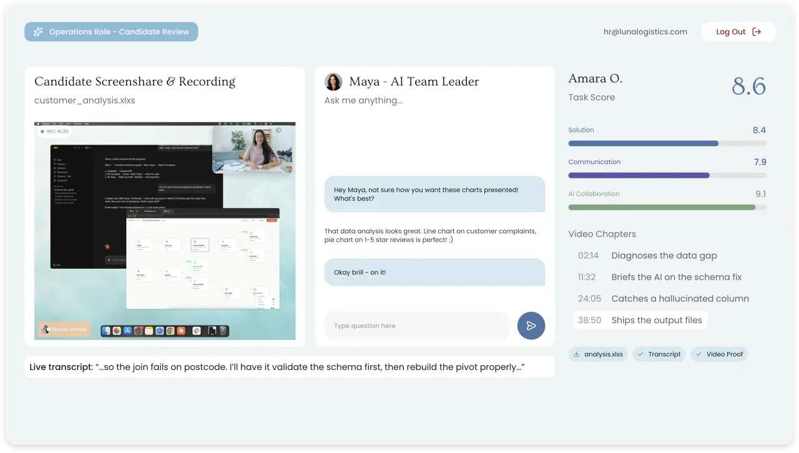
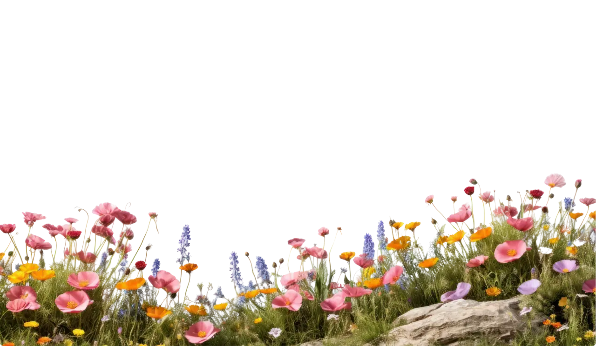

See the work, not the CV. Fluencyfox gives candidates a real-world task using the AI tools they'd use on day one, and reveals the brilliant ones through three things: a full session recording, the solution they shipped, and scores on how they built, used AI, and communicated.


THE PROBLEM
Two candidates write the same two letters - "AI". One is masterful, one is just getting started. On paper, they are exactly the same person.
Talking about how you work with AI and actually doing it are two different skills. A conversation can only ever test the first one.
Assessment platforms that try to sandbox or ban AI usage have become outdated. Future-proof skills are not cheating, don't lose out on top talent.
One consultative build with our team then it runs itself, at any volume.
HOW IT WORKS
Design it with us
We work with your team to customise the task around your bar: the objective, the brief, and the weightings that reflect a real-world scenario at your company.
Deploy from your ATS
Fully integrated with your ATS. Move a candidate into the assessment stage and they get a single-use link. Scores and feedback come straight back into the ATS. Scheduling and email sit in the same flow. No invigilators.
Decide with evidence
Every candidate lands in one dashboard, ranked by three scores weighted your way. Read the full transcript. Jump the chaptered video straight to the moments that matter - where they diagnosed the problem, briefed the AI, caught its mistake, shipped the file.
Every session is scored on the three things a hiring team actually buys weighted the way you set them.
WHAT WE MEASURE

Solution 70%
What they shipped. The file your team would actually receive, judged against the objective you set.

Communication 20%
How they think out loud. The full session is voiced and transcribed. You are sitting in on the work, not a follow-up chat after it.

AI collaboration 10%
How they direct the machine. Any tools they like: Claude, GrokBot, n8n, Zapier. What matters is how well they drive them.
AUTHENTICITY

Full screen capture,
no sandbox.
The whole session. Every tool and tab. Not a locked environment, and not a webcam guess.
Camera on, identity verified
It's really them, in the moment - every session is authentic, on the record, and fair to every candidate.
Voice throughout, transcribed
Candidates think aloud for the whole build. You get every word, searchable, next to the video.
 41:20
41:20
Every minute replayable
Chaptered video takes you straight to the decisions, no scrubbing through an hour of footage.
“An hour of tomorrow's work proves yesterday's interview.”
Fluencyfox isn't just for hiring. Turn the same immersive assessment inward and map AI fluency across the team you already have so you can see exactly where the strengths are, where the gaps are, and what to do next.
| PERSON | CORE WORK | COMMS | SYSTEMS | ADMIN | AVG |
|---|---|---|---|---|---|
|
Priya K.
Team Lead
|
8.9
|
5.1
|
7.2
|
7.0
|
7.0
|
|
Marcus D.
Account exec
|
7.4
|
3.2
|
5.5
|
5.8
|
5.5
|
|
Hannah W.
Ops manager
|
6.8
|
8.6
|
8.1
|
9.0
|
8.1
|
|
Tom R.
Engineer
|
8.2
|
2.9
|
4.4
|
4.9
|
5.1
|
- Not yet using AI
- Basic use
- Confident
- Fluent
Watch a real candidate session end-to-end and the dashboard your team would review it in. Half an hour, no slides.
Book a Demo